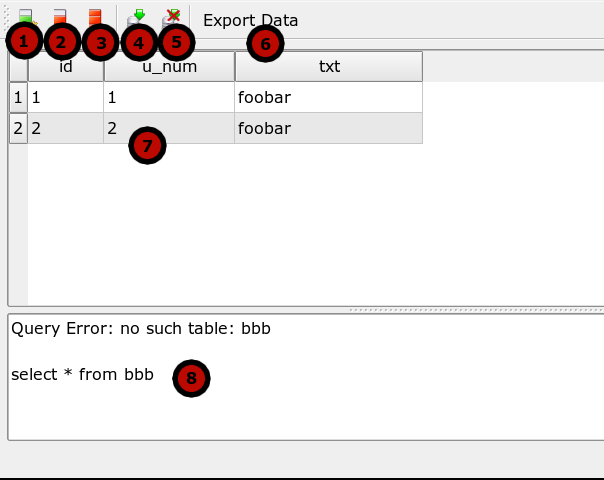

A place to present the results of your statements.

Choose requested format. Supported amount of formats can be platform different. Depending on the Open Source libraries availability.
File – select a file to save by the "Search" button.
Clipboard – export data into your system clipboard to
use in the others application directly. Note: if you are exporting the huge amount
of data your system can be slowed down rapidly. Use it at your own risk.